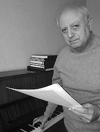
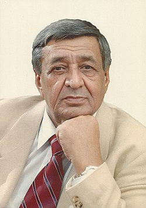
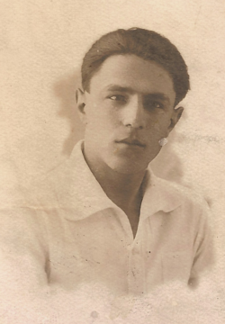

Aqşin Əliqulu oğlu Əlizadə 22 may 1937-ci ildə Bakıda anadan olub. Bakı Konservatoriyasını, Cövdət Hacıyevin bəstəkarlıq sinfini bitirib (1962). Aqşin Əliqulu oğlu Əlizadə 3 may 2014-cü ildə vəfat etmişdir.[1] Sovet İttifaqı Qəhrəmanı Mehdi Hüseynzadənin bacısı Bikə xanımın oğludur. Bəstəkar Əli Əlizadənin atasıdır. Fəaliyyəti Tələbə vaxtı yazdığı sonata Gənc Bəstəkarların I Ümumittifaq Müsabiqəsində I dərəcəli diploma (1962), sonra yazdığı Birinci simfoniya "Zaqafqaziya Baharı" festivalında I diploma layiq görülüb. 16 simli alətlər üçün yazılan "Ekspressiya" əsəri aleatorik və sonor texnikası üçün maraqlı təcrübədir. "Bayatılar" əsəri Azərbaycan musiqisində özünəməxsus eksperiment olaraq, daha çox monodik xarakter daşıyır. Aqşin Əlizadənin yaradıcılığının ümumi cəhətləri virtuoz etnoqrafizm, dərin fəlsəfi ümumiləşdirmə, emosional genişlik, konstruktivlik, şərqsayağı əlvan dekor və ciddi forma mütənasibliyidir. Əsas əsərləri "Babək" baleti, "Qafqaza səyahət" baleti, "Ümid valsı" baleti, 5 simfoniya, xor üçün "Bayatılar", "Təntənə", "Azərilər" kantatası, "Ana torpaq", "Qədim lay-lay", kamera orkestri üçün "Pastoral", "Aşıqsayağı", "Cəngi", "Kənd suitasi", "Uşaq süitasi", fortepiano üçün sonata, "Dastan", "Qədim oyunlar", "Portret", xoreoqrafiq simfoniya və s. 50-dən artıq bədii film, cizgi filmi, tamaşaya musiqi yazıb.
Həyatı 1950–1954-cü illərdə Asəf Zeynallı adına Orta ixtisas musiqi məktəbində tar ifaçısı kimi püxtələşərək, tanınmış pedaqoq, bir sıra mahnı və pyeslərin müəllifi Adil Gərayın tar məktəbini keçir. Dadaş Dadaşov məktəbdə oxuduğu illərdə ən istedadlı tar ifaçıları sırasında olmuş, 1963-cü ilədək Azərbaycan Televiziya və Radio Komitəsi nəzdindəki Xalq Çalğı Alətləri Orkestrində fəaliyyət göstərmişdir. 1958–1963-cü illərdə Cövdət Hacıyevin bəstəkarlıq sinfində təhsilini davam etdirir. Bəstəkar 2005-ci ildə Azərbaycan Respublikasının Əməkdar İncəsənət Xadimi, 2008-ci ildə Respublikanın Xalq Artisti adına layiq görülmüşdür[1]. Əsərləri Vokal əsərləri Ə. Cavadın sözlərinə iki romans (1996) Rəsul Rzanın sözlərinə "Rənglər" vokal silsiləsi (1985) A. İldırım, B. Vahabzadə, Y. Həsənbəy və b. şairlərin sözlərinə mahnılar (1990–2001). İnstrumental əsərləri Cövdət Hacıyevə ithaf olunmuş fortepiano üçün 12 prelüd (1977–1978) Qanun və piano üçün poema (1996) Simli trio (1986) Simli kvartet üçün poema (1990) Tar və piano, kamança və piano, qanun və piano üçün pyeslər (1990–2001). Orkestr üçün Xalq çalğı alətləri orkestri üçün 5 saylı süita (1993) Böyük Vətən Müharibəsində həlak olmuş azərbaycanlılara ithaf 1 saylı Simfoniya Simli orkestr üçün 2 saylı simfoniya (1995) Nəfəsli orkestr üçün "Zəfər marşı" (1996) Nəfəsli orkestr üçün "Təyyarəçilər marşı" (1998)[2] Qanun və simfonik orkestr üçün Konsert (2009)[1] Arxivləşdirilib 2016-02-15 at the Wayback Machine
Arif Cahangir oğlu Məlikov (13 sentyabr 1933[1][2], Bakı – 9 may 2019[3][1][…], Bakı) — Azərbaycan bəstəkarı və rəssamı[4], SSRİ xalq artisti (1986), Azərbaycan SSR xalq artisti (1978), professor (1979), Azərbaycan SSR Dövlət mükafatı laureatı (1986), Azərbaycan Milli Elmlər Akademiyasının müxbir üzvü (2001),[5] həqiqi üzvü (akademik) (2014)[6]. Avrasiya Akademiyasının qurucu üzvlərinin biri Həyatı Arif Cahangir oğlu Məlikov 13 sentyabr 1933-cü ildə Bakı şəhərində anadan olub. O, 1960-cı ildə Üzeyir Hacıbəyov adına Azərbaycan Dövlət Konservatoriyasını Qara Qarayevin bəstəkarlıq sinfi üzrə bitirmişdir. Həmin ildən orada dərs deməyə başlamış, ömrünün sonuna kimi orada professor və bəstəkarlıq kafedrasının müdiri kimi çalışmışdır. Bəstəkar Arif Məlikovun yaradıcılığı parlaq istedad və özünəməxsuluq ilə səciyyələnir. O, öz əsərlərində milli musiqi ənənələrini XX əsr musiqisinin nailiyyətləri ilə birləşdirərək mütərəqqi təfəkkürə malik sənətkar kimi çıxış etmişdir. Onun yaradıcılığına yüksək ideya, dolğun məzmun, obrazların dərin emosional-psixoloji ifadəsi xasdır. Görkəmli türk şairi Nazim Hikmətin librettosu əsasında yazdığı ilk böyük əsəri — "Məhəbbət Əfsanəsi" baleti Arif Məlikova dünya şöhrəti qazandırdı. 1961-ci ildə S. M. Kirov adına məşhur Leninqrad akademik opera və balet teatrının səhnəsindəki ilk tamaşadan dərhal sonra D. Şostakoviç yazırdı: "Arif Məlikov istedadlı bəstəkardır, onun musiqisi əsl peşəkar musiqidir. Partituranın dərin musiqi dramaturgiyası, onun daxili inkşafı, qəhrəmanların musiqi səciyyələrinin dəqiqliyi və ifadəliyi, orkestrovkada nadir ustalıq, onun xüsusi rəngarəngliyi, çoxlu tapıntılar bu gözəl musiqi əsərini böyük maraqla dinləməyi məcbur edir. Bəstəkarın sonrakı yaradıcılıq uğurlarından biri özbək yazıçısı Ş. Rəşidovun "İki qəlbin kitabı" əsəri əsasında yaratdığı "İki qəlbin poeması" baleti olmuşdur. Rəqqasə Komde və müğənni Modan haqqındakı qədim Şərq əfsanəsi baletdə əsl fəlsəfi ümumiləşdirmə zirvələrinə qaldırılaraq sənətin əbədliliyinin, qüdrətinin rəmzinə çevrilmişdir.
Asəf Zeynallı (5 aprel 1909, Dərbənd, Dağıstan vilayəti – 27 oktyabr 1932, Bakı) — Azərbaycan bəstəkarı. Həyatı Asəf Zeynalabdin oğlu Zeynallı 1909-cu ildə Dərbənddə doğulmuşdur. 7 yaşı olanda anası onu Dərbənd realnı məktəbinə qoyur. O, burda uşaq xorunda oxumağa başlayır, klarnet çalmağı öyrənir. Həmin illərdə Dərbənddəki nəfəsli orkestr yay axşamlarında şəhər parkında konsert verirdi. Asəf də hərdənbir orkestrin tərkibində klarnet çalmağa dəvət edilirdi.[1] Asəfin 11 yaşı olanda ailəsi Bakıya köçür. O, əvvəlcə hərbi məktəbin nəzdində nəfəsli orkestrdə truba çalmağı öyrənir, sonra Bakı Musiqi Texnikumunun truba, violonçel, fortepiano siniflərində təhsil alır. "Truba üçün pyes"ini 14 yaşında texnikumda özü ifa edir.[2] Asəf Zeynallı 1923–1926-cı illərdə Bakı musiqi texnikumunda, 1931-ci ildə Azərbaycan Dövlət Konservatoriyasının bəstəkarlıq şöbəsində, Üzeyir Hacıbəyovun sinfini bitirmişdi. 1929–1931 illərdə türk (Azərbaycan) fəhlə teatrında musiqi bölməsinin müdiri və Azərbaycan proletar musiqiçiləri birliyinin sədri işləmişdir. Tofiq Quliyev və Qara Qarayev bir müddət onun tələbələri olmuşlar. Azərbaycan musiqi tarixində ilk romanslar Asəf Zeynallının adı ilə bağlıdır. 23 il ömür sürməsinə baxmayaraq milli musiqi sənətində silinməz iz qoymuşdur. Milli romans, piano və simfonik musiqinin banisidir. Onun "Ölkəm", "Sərhədçi", "Çadra", "Sual", "Seyran" romansları milli vokal musiqimizin inciləridir. Piano üçün "Uşaq süitası" silsiləsi, "Çahargah" pyesi, violino və piano üçün "Muğamsayağı", 2 fuqa, simfonik orkestr üçün "Fraqmentlər", teatr tamaşalarına musiqi, xalq mahnıları işləmələrinin müəllifidir. Azərbaycan musiqi folklorunun toplanıb nota köçürülməsi və işlənməsi sahəsində böyük iş aparmışdır. "İbtidai not savadı" adlı dərslik tərtib etmişdir.